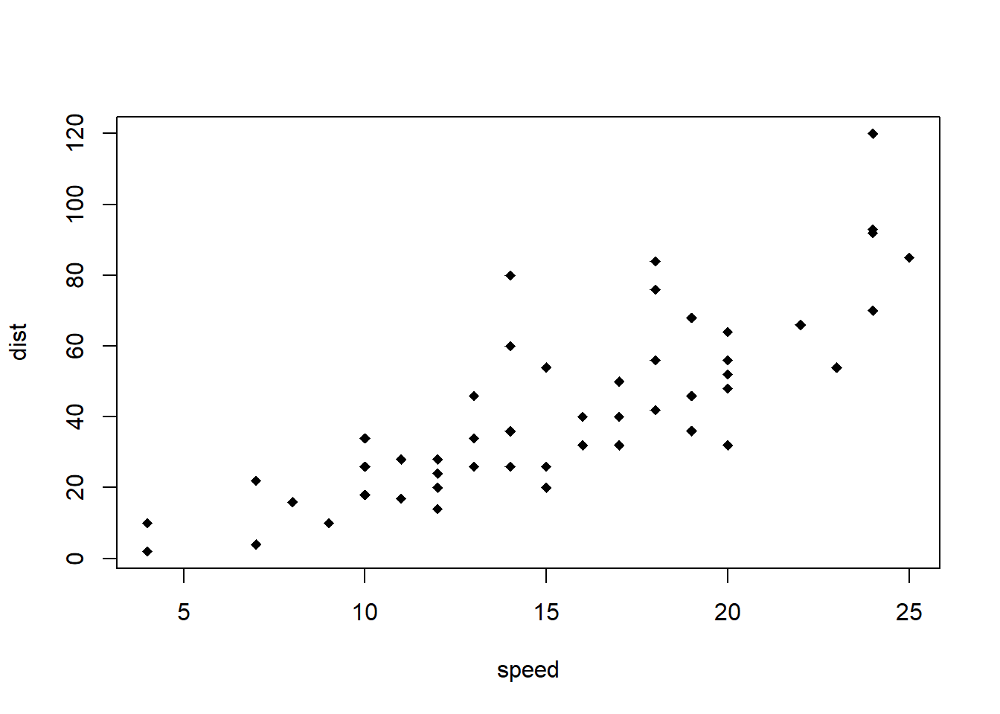

6 RMarkdown
6.1 RMarkdown简介
R Markdown文档中的文本是用Markdown语法编写的。确切地说，这是Pandoc的Markdownhttps://pandoc.org/MANUAL.html。
6.2 安装
你需要有R和RStudio。接下来需要安装rmarkdown包：
# 从CRAN安装稳定版
install.packages('rmarkdown')
# 从GitHub安装开发版
if (!requireNamespace("devtools"))
install.packages('devtools')
devtools::install_github('rstudio/rmarkdown')如果想生成PDF格式的输出文件，需要安装LaTex。如果你没有安装过的话，可以安装TinyTeX。
install.packages('tinytex')
tinytex::install_tinytex() # 安装TinyTeX有了rmarkdown包、RStudio/Pandoc和LaTeX，就能够编译大多数R Markdown文档。在某些情况下，可能需要其他R包，我们将在用到时候再细说。
6.3 基础
6.3.1 RMarkdown基础
下面是一个最基础的R Markdown文档，它本身是一个纯文本文件，后缀名为.Rmd：
---
title: "Hello R Markdown"
author: "Awesome Me"
date: "2018-02-14"
output: html_document
---This is a paragraph in an R Markdown document.
Below is a code chunk:
```{r}
fit = lm(dist ~ speed, data = cars)
b = coef(fit)
plot(cars)
abline(fit)
```
The slope of the regression is `r b[1]`.如果你使用RStudio，你可以从菜单栏File -> New File -> R Markdown，创建RMarkdown文档。
R Markdown文档有三个基本组件:元数据metadata、文本text和代码code。元数据写在这对三个破折号之间---。元数据的语法是YAML (YAML不是标记语言)，因此有时它也被称为YAML元数据或YAML frontmatter。预先警告您缩进在YAML中很重要，所以不要忘记正确地缩进顶部字段top field的子字段sub-field。请参阅Xie(2016)的 附录B.2，以获得一些显示YAML语法的简单示例。
文档的主体在元数据之后。文本(也称为prose或narratives)的语法是Markdown。有两种类型的计算机代码:
代码块以三个反引号开始，比如
```{r}，其中r表示语言名称，以三个反引号结束。你可以在花括号中写入chunk选项(例如，设置图形高度为5英寸:```{r, fig.height=5}。行内R代码表达式以
`r开头，以 反引号`结尾。
然后可以单击Knit按钮来编译文档(到HTML页面)，页面默认输出在RStudio的Viewer窗口。
6.3.2 编写R Markdown文档
编译R Markdown文档的通常方法是点击Knit按钮，相应的键盘快捷键是Ctrl + Shift + K(在macOS上是Cmd + Shift + K)。在底层，RStudio在新的R会话中调用函数rmarkdown::render()渲染文档。请注意,在新的R会话中渲染Rmd文档意味着当前R会话中的对象(例如，在R控制台中创建的对象)都不会被渲染。可重现性是RStudio使用一个新的R会话来呈现Rmd文档的主要原因：文档在下次打开R或在其他人的计算环境中继续工作。
如果你必须在当前的R会话中呈现一个文档，你也可以自己调用rmarkdown::render()，并将Rmd文件的路径传递给这个函数。这个函数的第二个参数是输出格式，默认为您在YAML元数据中指定的第一个输出格式(如果缺少该格式，则默认为html_document)。当你在元数据中有多种输出格式，并且不想使用第一种格式时，你可以在第二个参数中指定你想要的格式，例如，对于Rmd文档foo.Rmd与元数据:
output:
html_document:
toc: true
pdf_document:
keep_tex: true可以通过一下命令渲染成PDF：
rmarkdown::render('foo.Rmd', 'pdf_document')编写Rmd文档的另一种主要方式是R Markdown Notebooks。暂不介绍。
最后，我想提到一种“非官方”的编译Rmd文档的方法：xaringan::inf_mr()函数，或者类似的，RStudio addin插件“Infinite Moon Reader”。显然，这需要您安装xaringan包(Xie 2021e)。这种方式的主要优势是liverload:一种技术使您可以在保存源文档时实时预览输出，而不需要点击Knit按钮。另一个特点是，它在当前R会话中编译Rmd文档，这可能是您所希望的，也可能不是。请注意，此方法只适用于输出到HTML的Rmd文档，包括HTML文档和演示文稿。
一些R Markdown扩展包，如bookdown和blogdown，有自己的编译文档的方式，我们将在后面介绍它们。
注意，也可以从一个R Markdown源文档呈现一系列报告，而不是单个报告。您可以参数化R Markdown文档，并使用不同的参数生成不同的报告。此坑后文补充。
6.3.3 备忘清单（Cheat sheet）
RStudio创建了大量的备清单（cheat sheet），包括一页的R Markdown备忘单，可以在上免费获得。https://www.rstudio.com/resources/cheatsheets/
6.3.4 输出格式
在rmarkdown包中有两种输出格式:文档和演示文稿。下面列出了所有可用的格式：
beamer_presentationcontext_documentgithub_documenthtml_documentioslides_presentationlatex_documentmd_documentodt_documentpdf_documentpowerpoint_presentationrtf_documentslidy_presentationword_document
对于Rmd文件的YAML元数据中的输出格式名，如果格式来自于扩展包，你需要包含包名，例如:
output: tufte::tufte_html如果格式来自于rmarkdown包，则不需要加rmarkdown::前缀(尽管这不会有什么坏处)。
当文档中有多种输出格式时，RStudio Knit按钮后面会有一个下拉菜单，列出输出格式的名称。

每种输出格式通常都有几个格式选项。所有这些选项都记录在R包帮助页面中。例如，您可以在R中输入?rmarkdown::html_document打开html_document格式的帮助页面。当您想要使用某些选项时，您必须将值从R转换为YAML，例如:
html_document(toc = TRUE, toc_depth = 2, dev = 'svg')需要被写成：
output:
html_document:
toc: true
toc_depth: 2
dev: 'svg'注意，R’中的 TRUE, FALSE, 和 NULL 对于YAML的true, false, 和 null。YAML中的字符通常不需要引号括起来(e.g., dev: 'svg' and dev: svg是一样的),除非包含特殊字符, 例如冒号:。可临药 yaml 包进行检验是否需要引号, e.g.,
cat(yaml::as.yaml(list(
title = 'A Wonderful Day',
subtitle = 'hygge: a quality of coziness'
)))title: A Wonderful Day
subtitle: 'hygge: a quality of coziness'如果您的选项保护R的函数结果，则可以使用!expr，它会告诉yaml包需要解析和计算该选项。下面是一个在HTML输出中使用随机主题的例子
cat(yaml::as.yaml(list(
title = 'A Wonderful Day',
subtitle = 'hygge: a quality of coziness'
)))title: A Wonderful Day
subtitle: 'hygge: a quality of coziness'如果某个选项有子选项(这意味着这个选项的值是一个R的列表)，子选项需要进一步缩进，例如:
output:
html_document:
toc: true
includes:
in_header: header.html
before_body: before.html一些选项被传递给knitr，例如dev、fig_width和fig_height。一些选项被传递给Pandoc，例如toc、toc_depth和number_sections。
output:
pdf_document:
toc: true
pandoc_args: ["--wrap=none", "--top-level-division=chapter"]6.3.5 R代码块和R行内代码
可以使用RStudio工具栏(Insert按钮)或快捷键Ctrl + Alt + I (Cmd + Option + I)插入R代码块。
在代码块中可以做很多事情:可以生成文本输出、表格或图形。你可以通过块选项很好地控制所有这些输出，这些选项可以在大括号中设置(在```{r 和 }之间)。例如，你可以通过chunk选项results = 'hide'选择隐藏文本输出，或者通过fig.height = 4. 设置图形高度为4英寸。Chunk选项用逗号分隔，例如：
```{r, chunk-label, results='hide', fig.height=4}在谢益辉的blog中https://yihui.name/knitr/options有大量的chunk选项。下面我们列出了其中的一个子集:
除了代码块标签（chunk label）不需要tag，仅需要输入value。其他选项都是通过键值对的形式输入tag=value。当然，代码块标签选项也可以显性采用键值对的形式输入label='自定义标签名'。每个代码块的标签是唯一的，如果没有手动指定其标签值，RMarkdown会自动命名为unnamed-chunk-i，i是增量的正数。
6.3.5.1 全局设置
如果某个选项需要在多个代码块中频繁地设置为一个值，你可以考虑在文档的第一个代码块（YAML的下方）中全局设置它，你可以使用knitr::opts_chunk$set()来改变文档中chunk选项的默认值。例如，你可以把它放在你文档的第一个代码块:
例子一：
```{r, setup, include=FALSE}
knitr::opts_chunk$set(fig.width = 8, collapse = TRUE)
```例子二：
```{r, setup, include=FALSE}
knitr::opts_chunk$set(
comment = '', fig.width = 6, fig.height = 6
)
```6.3.5.2 代码执行（Code evaluation）
eval：(TRUE；逻辑值或数字) 。是否运行代码块。它也可以是一个数值向量来选择要执行的R代码，例如，eval = c(1,3,4)将执行第一个、第三个和第四个R代码，而eval = -(4:5)将求值除第四个和第五个代码之外的所有代码。
6.3.5.3 文本输出（Text output）
echo：(TRUE；逻辑值或数字)是否在输出文档中显示源代码。除了显示/隐藏源代码的TRUE/FALSE之外，我们还可以使用一个数值向量来选择在一个代码块中要显示的R代码，例如，echo = 2:3表示只显示第2和第3个代码，echo = -4表示排除第4个代码。results：(`makeup`；字符)控制如何显示文本结果。注意，此选项仅适用于普通文本输出(对warnings、messages和errors不起作用)。取值如下:markup：默认的显示形式，可不写，本书返回的结果基本都是此默认值。asis：文本输出为本身as-is，在文档中直接输出其结果hold：一个代码块所有的代码都显示完， 才显示所有的结果。hide：运行了代码后不显示运行结果。
collapse：(FALSE； 逻辑值)，是否将一个代码块中的源代码和输出写在同一个块(默认情况下，它们被写入不同的块)warning： (TRUE；逻辑值) ，是否在输出中保留警告。如果为FALSE，所有警告将在控制台中显示，而不是文档中显示。还可以输入数字，例如，3表示从这个代码块中显示第三个警告。error：(FALSE；逻辑值)，默认代码发生错误error时会停止。如果想出现错误的情况下，后续代码继续允许的话，需要改为TRUE。如果希望得到错误警告并继续允许后续代码，则可以设置error = 0。message: (TRUE; 逻辑值) 是否保留message()发出的消息include: (TRUE; 逻辑值) 如果，变为FALSE则本代码段仅运行， 但是代码和结果都不写入到生成的文档中。strip.white: (TRUE; 逻辑值) 是否删除输出中源代码块开头或结尾的空行class.output: (NULL; 字符)添加到文本输出块中的类名向量。此选项仅适用于R Markdown中的HTML输出格式。例如,class.output = c('foo'， 'bar')，文本输出将被放置在<pre class="foo bar"></pre>。
6.3.5.4 代码装饰（Code decoration）
tidy: (FALSE)是否自动重新排列代码段， 使得代码段格式更符合规范。TRUE: 调用formatR::tidy_source()函数自动重新排列代码段。
prompt: (FALSE; logical)TRUE代码用R的大于号提示符开始
comment: (‘##’; character)TRUE希望结果不用井号保护
highlight: (TRUE; logical) 是否以语法高亮显示源代码。
6.3.5.5 缓存（Cache）
cache: (FALSE; logical) 为了保险起见， 可以尽量不使用缓存功能， 而是用save()功能将需要长时间结算的结果保存下来， 用load()载入然后输出到结果文档中。
6.3.5.6 图片（Plots）
fig.widthandfig.height: 指定生成的图形的宽度和高度， 单位是英寸（1英寸等于2.54厘米）。如果同时指定，也可以使用fig.dim = c(6, 4)等价于fig.width = 6且fig.height = 4。
下面给出一个长宽都是10厘米的图例。
```{r fig.width=10/2.54, fig.height=10/2.54}
curve(exp(-0.1*x)*sin(x), 0, 4*pi)
abline(h=0, lty=3)
```curve(exp(-0.1*x)*sin(x), 0, 4*pi)
abline(h=0, lty=3)
out.width和out.height控制输出文档中R图片的输出大小，即缩放图像。应百分比，例如out.width = '80%'表示图片为页面宽度的80%。fig.align:图片的对齐方式. 取值可为'left','center', 或'right'。dev:记录R图的图形设备（graphical device）。通常情况下，LaTeX输出是'pdf'， HTML输出是'png'，但你当然可以使用其他设备，如'svg'或'jpeg'。
如果编译输出目标是HTML， 程序产生的图形是PNG格式， 属于点阵图， 图中的任何中文内容不会有乱码问题。 但是， 如果输出目标是PDF， 程序将产生PDF格式的图形， 这种图形属于矢量图， 需要正确设置文字编码才能保证图中的中文不会乱码。 设置的办法是用pdf.options()函数作如下指定：
其中的family选项指定了支持中文， 而height和width则是指定生成的每个图片的物理大小， 以英寸为单位。 这样的设定一般都放在Rmd文件开头， YAML后面的位置， 用setup作代码段标签， 加include=FALSE代码段选项表示仅运行但不使用运行得到的文字和图形输出结果。
6.3.6 插入图片
默认情况下，由R代码生成的图形将立即放置在生成图形的代码块之后。例如
```{r}
plot(cars, pch = 18)
```
(1) 图片标题
您可以在chunk选项中使用fig.cap选项设置图片标题。如果文档输出格式支持选项fig_caption: true(输出格式rmarkdown::html_document)， R图形将被放置到图形环境中。在PDF输出的情况下，这些数字将被自动编号。
（2） 图片并排显示
要将多个图形从相同的代码块并排放置，你可以使用fig.show='hold'选项和out.width的选项。下图示例，有两个图，每个图的宽度为50%。
```{r hold-position, fig.cap='Two plots side-by-side.', fig.show='hold', out.width='50%', fig.width=5, fig.height=4}
par(mar = c(4, 4, .2, .1))
plot(cars, pch = 19)
plot(pressure, pch = 17)
```图6.1: Two plots side-by-side.
(3) 非R代码生成的图片
如果需要显示不是由R代码生成的图形，可以使用knitr::include_graphics()函数，它比的Markdown语法更能控制图像的属性。
```{r, out.width='25%', fig.align='center', fig.cap='...'}
knitr::include_graphics('images/hex-rmarkdown.png')
```
图6.2: The R Markdown hex logo.
6.3.7 表格
显示表格最简单方法是使用knitr::kable()，它可以创建HTML, PDF和Word输出的表可以通过向设置caption参数来包含表标题，例如:
```{r tables-mtcars}
knitr::kable(iris[1:5, ], caption = 'A caption')
```| Sepal.Length | Sepal.Width | Petal.Length | Petal.Width | Species |
|---|---|---|---|---|
| 5.1 | 3.5 | 1.4 | 0.2 | setosa |
| 4.9 | 3.0 | 1.4 | 0.2 | setosa |
| 4.7 | 3.2 | 1.3 | 0.2 | setosa |
| 4.6 | 3.1 | 1.5 | 0.2 | setosa |
| 5.0 | 3.6 | 1.4 | 0.2 | setosa |
如果您正在寻找表格样式化的更高级控制，建议您使用 kableExtra。
6.3.8 行内代码
除了代码块，你也可以在行内文本中插入R对象的值. 例如：
```{r}
x = 5 # 圆的半径
```
如果一个圆的半径为 `r x`，
它的面积等于 `r pi * x^2`。显示为
x = 5 # 圆的半径如果一个圆的半径为 5, 它的面积等于78.5398163。
6.3.9 在RMarkdown使用其他语言
关于R Markdown的一个鲜为人知的事实是，它还支持许多其他语言，如Python、Julia、c++和SQL。这种支持来自knitr包，它提供了大量的语言引擎，你可以通过以下方式列出所有可用引擎的名称:
names(knitr::knit_engines$get())## [1] "awk" "bash" "coffee" "gawk" "groovy"
## [6] "haskell" "lein" "mysql" "node" "octave"
## [11] "perl" "psql" "Rscript" "ruby" "sas"
## [16] "scala" "sed" "sh" "stata" "zsh"
## [21] "highlight" "Rcpp" "tikz" "dot" "c"
## [26] "cc" "fortran" "fortran95" "asy" "cat"
## [31] "asis" "stan" "block" "block2" "js"
## [36] "css" "sql" "go" "python" "julia"
## [41] "sass" "scss" "R" "bslib" "targets"
## [46] "theorem" "lemma" "corollary" "proposition" "conjecture"
## [51] "definition" "example" "exercise" "hypothesis" "proof"
## [56] "remark" "solution"library(reticulate)x = 'hello, python world!'
print(x.split(' '))## ['hello,', 'python', 'world!']后续待补充。
6.3.10 交互式文档
R Markdown文档也可以生成交互式内容。有两种类型的交互式R Markdown文档:您可以使用HTML Widgets（HTML控件）框架，或Shiny框架(或两者都使用)。它们将后文中详细描述。
6.3.10.1 HTML widgets（HTML控件）
HTML Widgets框架是在R包htmlwidgets 中实现的，它可以连接JavaScript，创建交互式应用程序(如交互式图形和表格)。基于这个框架已经开发了几个widget包，如DT，leaflet和dygraphs 。访问https://www.htmlwidgets.org了解有关widget包的更多信息，以及如何自己开发widget包。
显示了通过leaflet创建的交互式地图，下面是源文档
```{r out.width='100%', echo=FALSE,warning=FALSE}
library(leaflet)
leaflet() %>% addTiles() %>%
setView(117.1730089187622, 39.107918850334265, zoom = 17) %>%
addPopups(
117.1730089187622, 39.107918850334265,
'这里是 <b>天津大学</b>'
)
```6.3.10.2 Shiny文档
shiny包构建了由R驱动的交互式web应用程序。要从R Markdown文档中调用shiny代码，需要将runtime: shiny添加到YAML元数据中，就像下面这个文档:
---
title: "A Shiny Document"
output: html_document
runtime: shiny
---
A standard R plot can be made interactive by wrapping
it in the Shiny `renderPlot()` function. The `selectInput()`
function creates the input widget to drive the plot.
```{r eruptions, echo=FALSE}
selectInput(
'breaks', label = 'Number of bins:',
choices = c(10, 20, 35, 50), selected = 20
)
renderPlot({
par(mar = c(4, 4, .1, .5))
hist(
faithful$eruptions, as.numeric(input$breaks),
col = 'gray', border = 'white',
xlab = 'Duration (minutes)', main = ''
)
})
```6.4 文档格式（HTML,PDF,Word…）
Markdown最初的版本主要是为了更容易地编写HTML内容。例如，你可以写一个项目符号，可以用Markdown的- text，而不是冗长的HTML代码<ul><li>text</li></ul>，或者引用，使用>text代替<blockquote> text </blockquote>。
Markdown的语法已经被Pandoc大大扩展。此外，Pandoc还可以将Markdown文档转换为多种输出格式。在本章中，我们将介绍各种文档输出格式的特性。
6.4.1 HTML
要从R Markdown创建HTML文档，你需要在文档的YAML元数据中指定html_document输出格式：
---
title: Habits
author: John Doe
date: March 22, 2005
output: html_document
---6.4.2 目录（Table of contents）
您可以使用toc选项添加一个目录(Table of contents，TOC)，并使用toc_depth选项指定它所应用的标题深度。例如:
---
title: "Habits"
output:
html_document:
toc: true
toc_depth: 2
---如果没有指定目录深度，默认值为3(目录将展示所有1、2和3级的标题)。
6.4.2.1 浮动目录
可以设定toc_float选项将目录浮动到主文档内容的左侧。即使在滚动文档时，浮动目录也总是可见的。例如:
---
title: "Habits"
output:
html_document:
toc: true
toc_float: true
---你可以为toc_float参数指定一个选项列表来控制它的行为。这些选项包括:
collapsed (默认TRUE) 控制目录是否只显示顶级头部(例如，H2)。如果最初折叠，则在必要时自动内联展开目录。
smooth_scroll (默认TRUE) 控制当点击鼠标导航到TOC项目时页面滚动是否动画。
例如
---
title: "Habits"
output:
html_document:
toc: true
toc_float:
collapsed: false
smooth_scroll: false
---6.4.3 小节编号Section numbering
您可以使用number_sections选项为标题添加节编号
---
title: "Habits"
output:
html_document:
toc: true
number_sections: true
---6.4.4 Tabbed sections
待补充
6.4.5 外观和样式（Appearance and style）
有几个选项可以控制HTML文档的外观:
theme指定页面使用的Bootstrap主题(主题从Bootswatch主题包中绘制)。有效的主题包括 default默认, cerulean天蓝, journal期刊, flatly平摊, darkly黑暗, readable可读, spacelab太空实验室, united统一, cosmo阈值, lumen流明, paper纸, sandstone砂石, simplex简单, 和 yeti雪人。对于没有主题可设置为null(在这种情况下，你可以使用css参数来添加你自己的样式)。highlight显示指定语法高亮显示样式。支持的风格包括default默认,tango探戈,pygments颜料,kate凯特,monochrome单色,espresso浓缩,zenburn,haddock黑线鳕,breezedark微风方舟, 和textmate。null不语法高亮显示。
例子：
---
title: "Habits"
output:
html_document:
theme: united
highlight: tango
---6.4.5.1 自定义CSS
你可以使用CSS选项将自己的CSS添加到HTML文档中:
---
title: "Habits"
output:
html_document:
css: styles.css
---如果你想从你自己的CSS中提供文档的所有样式，你可以设置theme和highlight为null:
---
title: "Habits"
output:
html_document:
theme: null
highlight: null
css: styles.css
---你也可以通过在文档的章节标题中添加id或类来使用定制CSS来针对文档的特定章节。例如下面的小节标题:
## Next Steps {#nextsteps .emphasized}可以让你使用以下CSS选择器将CSS应用到它的所有内容:
#nextsteps {
color: blue;
}
.emphasized {
font-size: 1.2em;
}6.4.6 图片选项（Figure options）
fig_width和fig_height可用于控制默认图形的宽度和高度(默认使用7x5)。fig_retina指定用于retina显示的缩放(默认为2，目前适用于所有广泛使用的retina显示)。设置为null可防止视网膜结垢。fig_caption控制是否将图片渲染为标题。dev控制用于渲染图形的图形设备(默认为png)。
例子
---
title: "Habits"
output:
html_document:
fig_width: 7
fig_height: 6
fig_caption: true
---6.4.7 数据框显示（Data frame printing）
您可以通过df_print选项增强数据框的默认显示。有效值见表
| 选项 | 描述 |
|---|---|
| default | Call the print.data.frame generic method |
| kable | Use the knitr::kable function |
| tibble | Use the tibble::print.tbl_df function |
| paged | Use rmarkdown::paged_table to create a pageable table |
| A custom function | Use the function to create the table |
6.4.7.1 Paged printing
当df_print选项设置为paged 时，表将被打印为支持行和列分页的HTML表。例如(见图 6.3):
---
title: "Motor Trend Car Road Tests"
output:
html_document:
df_print: paged
---
```{r}
mtcars
```
图6.3: A paged table in the HTML output document.
Table 6.3 paged tables的可能选项.
| 选项 | 描述 |
|---|---|
| max.print | The number of rows to print. |
| rows.print | The number of rows to display. |
| cols.print | The number of columns to display. |
| cols.min.print | The minimum number of columns to display. |
| pages.print | The number of pages to display under page navigation. |
| paged.print | When set to FALSE turns off paged tables. |
| rownames.print | When set to FALSE turns off row names. |
这些选项在每个块中的设置如下:
```{r cols.print=3, rows.print=3}
mtcars
```6.4.7.2 自定义函数（Custom function）
df_print选项还可以采用任意函数在输出文档中创建表格。这个函数必须根据使用的输出以正确的格式输出。
例如
rmarkdown::html_document(df_print = knitr::kable)等价于使用"kable"方法
rmarkdown::html_document(df_print = "kable")要在YAML头文件中使用df_print中的自定义函数，必须使用!expr标签，这样它之后的R表达式才会被求值。详见帮助页面?yaml::yaml.load的eval.expr参数。
---
title: "Motor Trend Car Road Tests"
output:
html_document:
df_print: !expr pander::pander
---
```{r}
mtcars
```6.4.8 代码折叠（Code folding）
code_folding属性设置HTML结果中代码折叠选项， 取值hide可以隐藏代码， 但读者通过选项可见。 取值show可以显示代码， 但读者通过选项可隐藏代码显示。
例子
---
title: "Habits"
output:
html_document:
code_folding: hide
---6.4.9 MathJax数学公式的支持
Rmd格式支持数学公式， 在生成的HTML、Word、PDF中都可以正常显示数学公式， RStudio软件内部的浏览器也可以直接显示数学公式。
以HTML为输出时， 会使用MathJax库显示数学公式。 这是一个用于在浏览器中显示数学公式的Javascript程序库， 显示效果很好， 还支持多种显示实现方式， 支持包括LaTeX在内的多种数学公式输入方法。 R Markdown原来使用MathJax版本2， 现在MathJax已经发布了版本3， 有很大的改动， 我们这里应仍使用版本2。
MathJax库很大， 所以一般是从其网站按需远程调用的， 但是远程调用MathJax库在网络不畅通时会使得公式显示极为缓慢甚至无法显示， 所以Rmd允许将MathJax本地化。 在.Rmd文件头部YAML元数据的某种HTML输出格式的属性中， 设置属性mathjax: local就可以使得MathJax库被放在生成的HTML的一个下层目录中。 设置如
For example, to use a local copy of MathJax:
---
title: "Habits"
output:
html_document:
mathjax: local
self_contained: false
---注意设置mathjax: local同时必须设置self_contained: false。 在不使用本地MathJax副本时， 可以设置self_contained: true， 这使得图形文件、JavaScript代码等依赖项也打包在生成的单一HTML文件中， 如果设为false， 这些依赖文件会存放在单独文件中。 可以用lib_dir属性指定一个子目录用来存放这些依赖文件， 多个Rmd文件可以共用同一个lib_dir值。
将MathJax用mathjax: local属性本地化有明显的缺点。 这时，每个Rmd项目都需要一个MathJax库副本， 使得文件备份变得很麻烦。 下面的设置方法可以令多个Rmd项目共享一个共同的本地MathJax库。
To use a self-hosted copy of MathJax:
---
title: "Habits"
output:
html_document:
mathjax: "http://example.com/MathJax.js"
---To exclude MathJax entirely:
---
title: "Habits"
output:
html_document:
mathjax: null
---6.4.10 文档依赖关系（Document dependencies）
默认情况下，R Markdown生成独立的HTML文件，没有外部依赖关系，使用data:URIs合并链接脚本、样式表、图像和视频的内容。这意味着您可以像共享Office文档或pdf一样共享或发布该文件。如果你更愿意将依赖关系保存在外部文件中，你可以指定self_contained: false。例如:
---
title: "Habits"
output:
html_document:
self_contained: false
---保留外部依赖项的一个常见原因是为了从网站上提供R Markdown文档(外部依赖项可以被浏览器单独缓存，从而加快页面加载时间)。在提供多个R Markdown文档的情况下，您可能还希望将相关库文件(例如Bootstrap和MathJax等)合并到多个文档共享的单个目录中。您可以使用lib_dir选项来完成此操作。例如:
---
title: "Habits"
output:
html_document:
self_contained: false
lib_dir: libs
---6.4.11 保留md文件
当knitr包处理R Markdown输入文件时，它会创建一个Markdown (*.md)文件，该文件随后被Pandoc转换成HTML。如果你想在渲染后保留Markdown文件的副本，你可以使用keep_md选项:
---
title: "Habits"
output:
html_document:
keep_md: true
---6.4.12 Includes
使用includes选项，在文档头部或文档主体之前/之后包含内容可以在增加HTML内容或替换核心Pandoc模板。
---
title: "Habits"
output:
html_document:
includes:
in_header: header.html
before_body: doc_prefix.html
after_body: doc_suffix.html
---6.4.13 自定义模板
您也可以使用template选项替换底层的Pandoc模板
Custom templates6.4.14 Markdown extensions
默认情况下，R Markdown被定义为所有的Pandoc Markdown扩展，并为与旧Markdown包的向后兼容性进行了以下调整
您可以使用md_extensions选项启用或禁用Markdown扩展(在选项前面加上-禁用和+启用)。例如:
---
title: "Habits"
output:
html_document:
md_extensions: -autolink_bare_uris+hard_line_breaks
---上面的代码将禁用autolink_bare_uri扩展，并启用hard_line_breaks扩展。
6.4.15 Pandoc参数
待补充。
6.4.17 HTML 片段（ HTML fragments）
如果要创建HTML片段而不是完整的HTML文档，可以使用html_fragment格式。例如:
---
output: html_fragment
---注意，HTML片段不是完整的HTML文档。它们不包含HTML文档所包含的标准头部内容(它们只包含<body>标签内的内容)。他们可以被包含在其他网页或内容管理系统(如博客)中。因此，它们不支持像主题或代码突出显示这样的特性(预期它们最终在处理这些事情的环境中发布)。